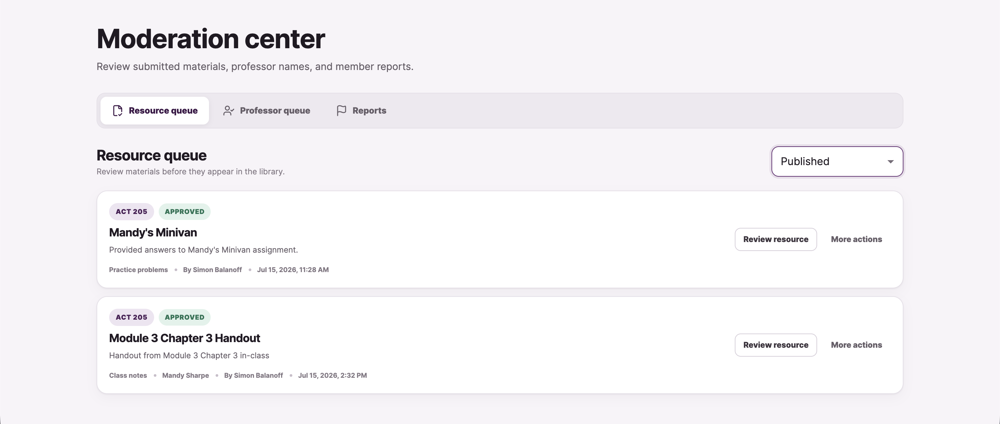

The problem
Chapter members need a shared place to find and contribute academic resources. The application combines resource discovery, document previews, and contribution review while limiting access to invited members.
Courses and professors provide the main organization, while resource type, topic, and relevance help members narrow their search.
What I built
- Resource discovery: search and filters by course, professor, type, topic, and relevance.
- Document handling: PDF uploads, automatically generated first-page previews, and private file storage.
- Member workflows: saved resources, helpful marks, personal submissions, and moderation status.
- Moderation: a review queue with approval and revision workflows.
- Administration: invitations, roles, users, and audit history.

Access & architecture
The React and TypeScript frontend communicates with an Express API. MongoDB stores users, sessions, courses, resources, and invitations. Cloudflare R2 provides object storage for private PDFs and generated previews.
Private files stay behind authentication. Documents are served through authenticated API routes rather than exposed as public storage URLs.
Access is role-specific. Members can browse and submit; moderators review contributions; administrators manage users, invitations, roles, and chapter-wide settings. Sessions use signed HTTP-only cookies.
The frontend is deployed on Vercel, the API on Render, with MongoDB Atlas and Cloudflare R2 handling data and object storage.
Result
The resulting application supports the full workflow from invitation and resource submission to moderation, discovery, and document preview.
The platform is intentionally invite-only. Its public repository documents the implementation and screenshots; access to the live application requires a member invitation.
Project documentation
View source code, architecture, and screenshots
Visit Study Bank (member access required)